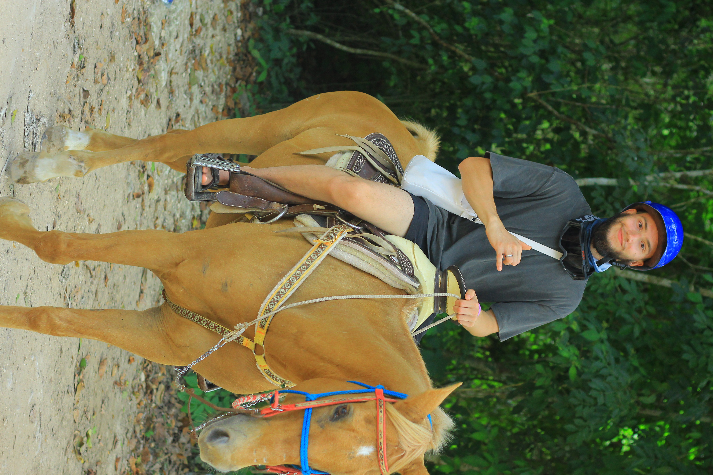

About Me
Hello! My name is Vesily Anfilofieff and I am a Computer Science student at Portland State University.
I have experience developing software using C, C++, Python, JavaScript, HTML, and CSS. My main interest is cybersecurity.
Through my classwor I've created programs that utilize multithreading, networking, and machine learning.
Education And Experience
Education
Portland State University
Bachelors of Science in Computer Science
Relevent CorseWork
- Data Structures
- Operating Systems
- Computer Networks
- Web Development
- Software Engineering
- Database Systems
Technical Skills
- C
- C++
- Python
- JavaScripot
- HTML
- CSS
- SQL
- Git
- Linux
Job Experience
I was part of the Computer Action Team at PSU where we were taught all of the basics when it comes to IT such as:
- Tech Support
- Troubleshooting
- Maintenance
- Inventory
- LANs and WANs
Projects
These are a few projects that show my expereince with Software Development, networking, and computer vision.
Multithreaded Argon2 Pasword Cracker
I developed a multithreaded password cracking application in C using POSIX threads. The project had a focus on parallel processing, load balancing, and performance optimization.
View RepositorySmart Dashcam Capstone
Created a smart dashcam from a Raspberry pi 5 that tracks activity aaround car and tracks it to a Database. Licens Plates, distance, and GPS.
View Repository